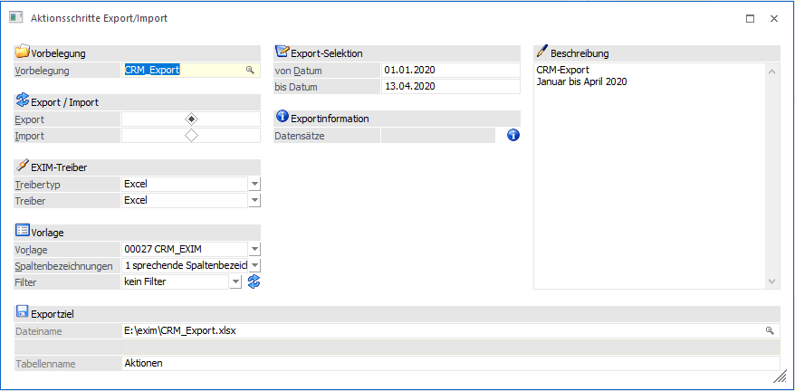
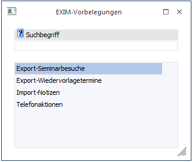
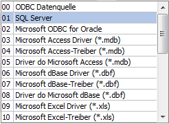
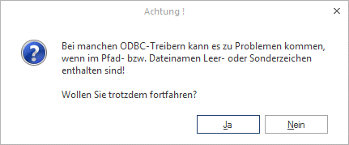
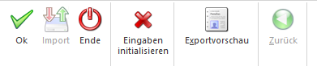
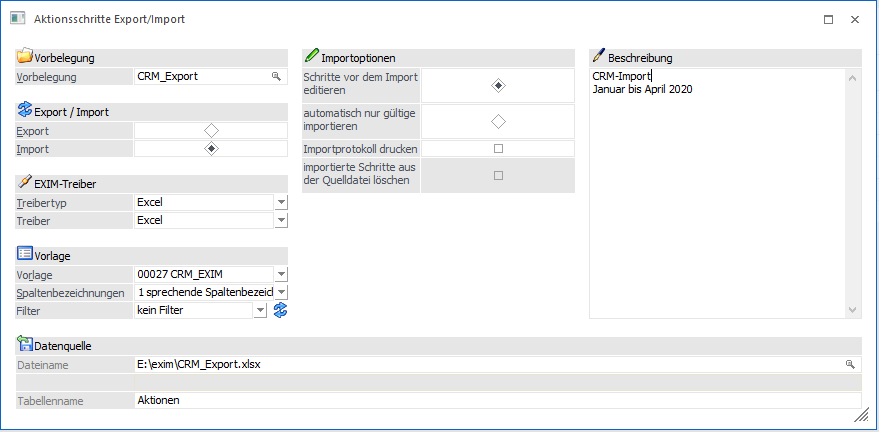
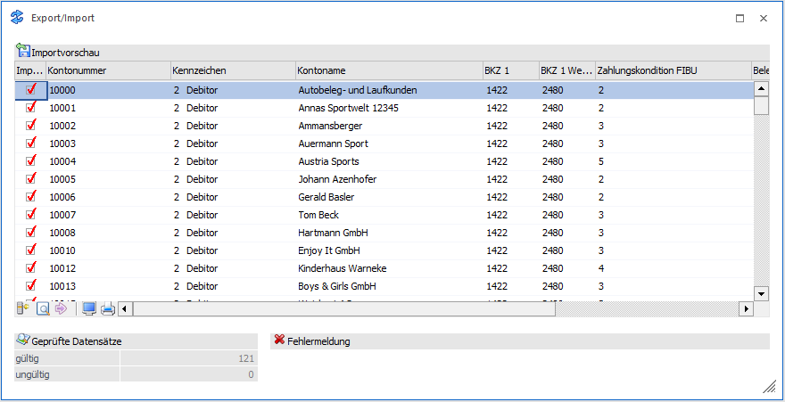
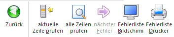
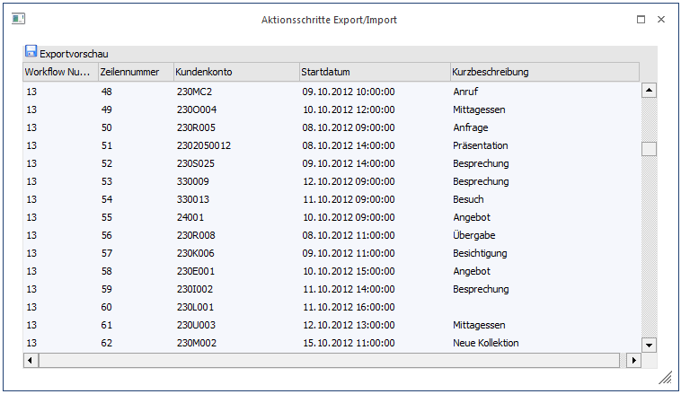

In diesem Menüpunkt können CRM-Einträge (Aktionsschritte oder Workflows) exportiert sowie importiert werden.
Export von Aktionsschritten in die WinLine

Ø Vorbelegung
In diesem Feld kann mit der Matchcode-Funktion (F9 oder Anklicken der Lupe) nach einer bestehenden Vorbelegung gesucht werden oder eine neue Bezeichnung für eine Vorbelegung eingegeben werden. Über die Vorbelegung können die bereits einmal getätigten Angaben erneut aufgerufen werden.

Ø Export/Import
Um Datensätze zu exportieren, muss die Option "Export" gewählt werden.
Ø Treibertyp
In diesem Bereich kann gewählt werden, ob der Export über den Treibertyp "Excel", "XML" bzw. "OBDC" erfolgen soll. Die weiteren Einstellungen dazu erfolgen im Feld "Treiber".
Ø Treiber
Hier kann auswählt werden, welches Datenformat beim Export erzeugt werden soll. Abhängig von der Einstellung im Feld "Treibertyp" sind die Auswahlmöglichkeiten unterschiedlich.
Wurde als Treibertyp die Auswahl Excel" gewählt, so steht als Treiber ebenfalls der Eintrag "Excel" zur Verfügung.
Wurde als Treibertyp "XML" selektiert, so lautet der zugehörige Treiber "XML (Webservice)". Diese Treiber-Option kann nur in Verbindung mit einer Vorlage verwendet werden, die zuvor als "Webservice-Vorlage" angelegt wurde.
Für den Treibertyp "ODBC-Treiber" stehen alle ODBC-Treiber zur Auswahl, die im System installiert sind, z.B.:

Je nachdem, welcher Treiber gewählt wurde, wird die weitere Eingabe des Zielpfades und des Namens der Ausgabedatei bzw. Tabelle oder Datenbank gestaltet (Bereich Exportziel).
Beispiel
Wird das Format "MS-Access Treiber (MDB)" gewählt, erfolgt die Aufforderung, den Pfad, den Datenbanknamen, sowie den Namen der Tabelle anzugeben, in welcher die Datensätze ausgegeben werden sollen.
Wird z.B. das Format MS-SQL-Server gewählt, so muss der SQL-Servername, sowie der Datenbank- und Tabellenname eingetragen werden, etc. .
Wird beim Export eine bereits bestehende Ausgabedatei bzw. -tabelle angesprochen, so werden neue Datensätze angehängt und identische Datensätze (d.h. z.B. dasselbe Kundenkonto, das schon einmal exportiert worden ist) überschrieben.
Hinweis
Je nachdem, welche ODBC-Treiber verwendet werden, bzw. welche ODBC-Treiber-Version verwendet wird, kann es zu ungewünschten Verhalten des Export/Imports kommen, wenn Sonderzeichen im Ziel- Verzeichnisnamen oder im Datenbanknamen vorkommen. Aus diesem Grund wird - wenn solche Sonderzeichen verwendet werden - eine entsprechende Warnmeldung ausgegeben:

Um sicherzustellen, dass Notizfelder in voller Länge exportiert werden, muss je nach verwendetem Treiber (Access- oder SQL-Treiber) der erste auswählbare Treiber aus der Auswahllistbox verwendet werden. D.h. ist die Auswahlmöglichkeit an Treibern der Reihenfolge nach z.B. "02 Microsoft Access Driver (*.mdb)", "10 Microsoft Access Treiber (*.mdb)" und "16 Driver do Microsoft Access (*.mdb)", dann müsste in diesem Fall "02 Microsoft Access Driver (*.mdb)" selektiert werden. Andernfalls wird das Notizfeld nur mit 255 Zeichen exportiert.
Ø Vorlage
Durch Auswahl der Vorlage wird bestimmt, welche Datenfelder in welcher Reihenfolge exportiert werden sollen. Die Vorlagen werden im Menüpunkt
1 Vorlagen
1 Vorlagen Anlage
1 Export-/Import-Vorlagen
erstellt.
Ø Spaltenbezeichnungen
In diesem Feld kann festgelegt werden, ob, bzw. mit welcher Art von Spaltenbezeichnungen gearbeitet werden soll.
ü 0 - numerische
Spaltenbezeichnungen
Die Exportdatei bzw. Tabelle erhält jeweils die
Spaltenbezeichnung, wie sie auch in den Tabellen der WinLine-Datenbank heißen.
Wenn Daten mit numerischen Spaltenbezeichnung importiert werden sollen, dann
sollte vorher ein Test-Export durchgeführt werden, damit bekannt ist, wie die
einzelnen Felder benannt werden müssen.
ü 1 - sprechende
Spaltenbezeichnungen
Die Exportdatei bzw. Tabelle erhält jeweils die
Spaltenbezeichnung, die auch in der Vorlage definiert wurde. Beim Import muss
darauf geachtet werden, dass die erste Spalte (dort wird der Key (z.B. Konto-
oder Artikelnummer) gespeichert) der Bezeichnung in der Vorlage entspricht.
ü 2 - keine
Spaltenbezeichnungen
Diese Auswahlmöglichkeit steht nur bei Verwendung des
Treibertyps "Excel" zur Verfügung. Damit werden keine Spaltenbezeichnungen
ausgegeben.
Ø Filter
Durch Auswahl eines Filters aus der Auswahllistbox (hier werden alle bereits angelegten Filter für den ausgewählten Stammdatentyp angezeigt) kann die Ausgabe der Datensätze auf bestimmte Datensätze beschränkt werden (z.B. nur auf Kundendaten einer bestimmten Kundengruppe, nur auf Kunden eines bestimmten Postleitzahlengebietes, nur auf Artikel einer bestimmten Artikelgruppe, etc.).
Die Anlage der Filter erfolgt durch Anklicken des Filter-Buttons, der sich neben dem Eingabefeld befindet - damit öffnet sich der Filter-Assistent, der durch die Anlage eines Filters führt. Wird ein neuer Filter angelegt, dann wird dieser automatisch in das Eingabefenster gestellt und kann natürlich durch einen anderen (bzw. keinen Filter) aus der Auswahllistbox ersetzt werden.
Ø Export-Selektion - Selektion von Datum / bis Datum
In diesen beiden Felder kann auf die Variable "Datum Schritt geschrieben" eingegrenzt werden.
Ø Export-Selektion - Exportinformation
Nach Drücken des INFO-Buttons wird angezeigt, wie viele Datensätze zum Export vorhanden sind.
Ø Beschreibung
Sobald eine Vorbelegungs-Bezeichnung eingegeben wird, wird die Eingabe in diesem Feld freigeschalten und es kann ein entsprechender Beschreibungstext hinterlegt werden. Dieser Beschreibungstext wird mit der Vorbelegung gespeichert und beim erneuten Laden der Vorbelegung wieder mit angezeigt.
Buttons

Ø OK-Button
Durch Drücken des OK-Buttons wird der Export gestartet.
Ø Exportvorschau
Nach Drücken des Buttons "Exportvorschau" werden sämtliche Datensätze, die nach Starten des Exports durch Drücken der Taste "OK" exportiert werden, in einer Tabelle am Bildschirm angezeigt.
Ø Eingaben initialisieren
Durch Drücken des Buttons "Eingaben initialisieren" werden alle Eingaben und Selektionen im Export-Fenster wieder gelöscht (z.B. auf welchen Pfad oder Tabellennamen ausgegeben werden soll). Danach kann der Export von Null weg neu definiert werden. Außerdem kann durch Beantwortung der Abfrage "Wollen Sie die Vorbelegung "xxxxxx" löschen" (xxxxxx steht für den Namen der Vorbelegung) die Vorbelegung gelöscht werden.
Import von Aktionsschritten in die WinLine

Ø Vorbelegung
In diesem Feld kann mit der Matchcode-Funktion (F9 oder durch Anklicken der Lupe) nach einer bestehenden Vorlage gesucht werden, oder eine neue Bezeichnung für eine Vorlage eingegeben werden.
Ø Export/Import
Um Datensätze zu importieren, muss die Option "Import" gewählt werden.
Ø Treibertyp
In diesem Bereich kann gewählt werden, ob der Import über den Treibertyp "Excel", "XML" bzw. "OBDC" erfolgen soll. Die weiteren Einstellungen dazu erfolgen im Feld "Treiber".
Ø Treiber
Hier kann auswählt werden, welches Datenformat beim Export erzeugt werden soll. Abhängig von der Einstellung im Feld "Treibertyp" sind die Auswahlmöglichkeiten unterschiedlich.
Wurde als Treibertyp die Auswahl Excel" gewählt, so steht als Treiber ebenfalls der Eintrag "Excel" zur Verfügung. Wurde als Treibertyp "XML" selektiert, so lautet der zugehörige Treiber "XML (Webservice)". Diese Treiber-Option kann nur in Verbindung mit einer Vorlage verwendet werden, die zuvor als "Webservice-Vorlage" angelegt wurde. Für den Treibertyp "ODBC-Treiber" stehen alle ODBC-Treiber zur Auswahl, die im System installiert sind,
Je nachdem, welcher Treiber gewählt wurde, wird die weitere Eingabe des Zielpfades und des Namens der Ausgabedatei bzw. Tabelle oder Datenbank gestaltet.
Beispiel
Wird das Format "MS-Access Treiber (MDB)" gewählt, erfolgt die Aufforderung, den Pfad, den Datenbanknamen, sowie den Namen der Tabelle anzugeben, in welcher die Datensätze ausgegeben werden sollen. Wird z.B. das Format MS-SQL-Server gewählt, so muss der SQL-Servername, sowie der Datenbank- und Tabellenname eingetragen werden, etc. .
Hinweis
Je nachdem, welche ODBC-Treiber verwendet werden, bzw. welche ODBC-Treiber-Version verwendet wird, kann es zu ungewünschten Verhalten des Export/Imports kommen, wenn Sonderzeichen im Ziel- Verzeichnisnamen oder im Datenbanknamen vorkommen. Aus diesem Grund wird - wenn solche Sonderzeichen verwendet werden - eine entsprechende Warnmeldung ausgegeben:
Um sicherzustellen, dass Notizfelder in voller Länge importiert werden, muss je nach verwendetem Treiber (Access- oder SQL-Treiber) der erste auswählbare Treiber aus der Auswahllistbox verwendet werden. D.h. ist die Auswahlmöglichkeit an Treibern der Reihenfolge nach z.B. "02 Microsoft Access Driver (*.mdb)", "10 Microsoft Access Treiber (*.mdb)" und "16 Driver do Microsoft Access (*.mdb)", dann müsste in diesem Fall "02 Microsoft Access Driver (*.mdb)" selektiert werden. Andernfalls wird das Notizfeld nur mit 255 Zeichen importiert.
Ø Vorlage
Durch Auswahl der Vorlage wird bestimmt, welche Datenfelder in welcher Reihenfolge importiert werden sollen. Die Vorlagen werden im Menüpunkt
1 Vorlagen
1 Vorlagen Anlage
1 Export-/Import-Vorlagen
erstellt.
Ø Spaltenbezeichnungen
In diesem Feld kann festgelegt werden, ob, bzw. mit welcher Art von Spaltenbezeichnungen gearbeitet werden soll.
ü 0 - numerische
Spaltenbezeichnungen
Die Datei bzw. Tabelle enthält jeweils die
Spaltenbezeichnung, wie sie auch in den Tabellen der WinLine-Datenbank heißen.
Wenn Daten mit numerischen Spaltenbezeichnung importiert werden sollen, dann
sollte vorher ein Test-Export stattgefunden haben: So ist dann bereits bekannt,
wie einzelne Felder benannt werden.
ü 1 - sprechende
Spaltenbezeichnungen
Wird dies selektiert, so müssen die zu importierenden
Tabellen, jeweils die Spaltenbezeichnungen haben, die auch in der Vorlage
definiert worden sind. So muss beim Import z. B. muss darauf geachtet werden,
dass die erste Spalte (dort wird der Key, z.B. Konto- oder Artikelnummer,
gespeichert) der Bezeichnung in der Vorlage entspricht. Wird die sprechende
Spaltenbezeichnung nicht gewählt, dann müssen die Spalten so benannt sein, wie
sie auch in den Tabellen der WinLine -Datenbank heißen (siehe 0 -
numerische Spaltenbezeichnung).
ü 2-keine
Spaltenbezeichnungen
Diese Auswahlmöglichkeit steht nur bei Verwendung des
Treibertyps "Excel" zur Verfügung. Damit werden keine Spaltenbezeichnungen
ausgegeben.
Ø Filter
Durch Auswahl eines Filters aus der Auswahllistbox (hier werden alle bereits angelegten Filter für den ausgewählten Stammdatentyp angezeigt) kann der Import der Datensätze auf bestimmte Datensätze beschränkt werden (z.B. nur auf Kundendaten einer bestimmten Kundengruppe, nur auf Kunden eines bestimmten Postleitzahlengebietes, nur auf Artikel einer bestimmten Artikelgruppe, etc.).
Die Anlage der Filter erfolgt durch Anklicken des Filter-Buttons, der sich neben dem Eingabefeld befindet - damit öffnet sich der Filter-Assistent, der durch die Anlage eines Filters führt. Wird ein neuer Filter angelegt, dann wird dieser automatisch in das Eingabefenster gestellt und kann natürlich durch einen anderen (bzw. keinen Filter) aus der Auswahllistbox ersetzt werden.
Importoptionen
Folgende Optionen können selektiert werden:
ü Sätze vor Import editieren
ü Automatisch nur gültige Datensätze importieren
ü Importprotokoll drucken
ü Importierte Daten aus der Quelldatei löschen
Importoption "Sätze vor Import editieren"
Wird diese Option aktiviert, können sämtliche Datensätze VOR dem endgültigen Einlesen in die WinLine Datenbank in einer Bearbeitungstabelle editiert bzw. kontrolliert werden. Über die Selektion innerhalb der Spalte "Import" kann optional die Ab- und Anwahl bestimmter Datensätze erfolgen.

Abbildung: Beispielfenster aus dem Bereich des Personenkonto-Imports
Unterhalb der Importvorschau werden folgende Angaben angezeigt:
ü Geprüfte Datensätze
Es wird
innerhalb der Importvorschau angezeigt, wie viele Datensätze gültig (fehlerfrei)
und wie viele ungültig sind.
ü Fehlermeldung
Wenn in der
Importdatei Fehler enthalten sind (z.B. falsche Preisliste, ungültige BKZ,
Kontonummer nicht im festgelegten Bereich etc.), dann wird die entsprechende
Fehlermeldung angezeigt.
Buttons innerhalb der Importvorschau (Tabellen- bzw. Ribbonbuttons)

Ø aktuelle Zeile prüfen
Die derzeit im Fokus stehende Zeile der Importvorschau wird hinsichtlich etwaiger Fehler überprüft.
Ø alle Zeilen prüfen
Nachdem diverse Änderungen/Anpassungen innerhalb der Importvorschau vorgenommen worden sind, können alle enthaltenen Datensätze durch Klicken dieses Buttons erneut geprüft werden.
Ø nächster Fehler
Sind mehrere Fehler vorhanden, können diese nacheinander begutachtet werden. Dabei wird der Fokus auf den nächsten fehlerhaften Datensatz gelegt. Sind alle Fehler in den zu importierende Datensätzen bereinigt, dann ist der Button nicht mehr anwählbar und "inaktiv" (gegrayed) dargestellt (vgl. o. a. Bild).
Ø Fehlerliste Bildschirm
Über diesen Button können enthaltene Fehler über ein EXIM-Fehlerprotokoll am Bildschirm ausgegeben werden. Darin wird Bezug auf die Zeile, den Eintrag und die Fehlermeldung genommen.
Ø Fehlerliste Drucker
Über diesen Button können enthaltene Fehler in einem EXIM-Fehlerprotokoll am definierten Drucker ausgegeben werden. Darin wird Bezug auf die Zeile, den Eintrag und die Fehlermeldung genommen.
Ø Zurück (nur Ribbonbutton)
Nach dem Klicken wird die Importvorschau geschlossen und der Import/Export kann neu definiert werden.
Ø Import (nur Ribbonbutton)
Dieser Button startet das Einlesen der Datensätze in die WinLine Datenbank. Gleichzeitig mit dem Import findet auch eine Prüfung der Datensätze statt, bei welcher alle Datensätze (nach den erforderlichen Richlinien der WinLine Applikationen) geprüft werden (z.B., ob die BKZ gültig (angelegt) ist, ob die Preisliste gültig ist, ob ungültige Sonderzeichen in einem der Datenfelder enthalten sind, etc. …).
Ungültige Datensätze werden für den Importlauf automatisch deaktiviert, d.h. das Häkchen in der Spalte "Import" wird entfernt.
Nach erfolgtem Import gibt das Programm eine Meldung aus, wie viele Datensätze importiert wurden und wie viele Datensätze als "fehlerhaft" deklariert worden sind. Werden ungültige Datensätze gefunden, so gibt es die Möglichkeit, diese Datensätze in einem Bearbeitungsfenster zu korrigieren bzw. die Fehler zu beheben Korrigierte Datensätze können anschließend importiert werden.
Ø Importoption: "automatisch nur gültige"
Ist die Option "automatisch nur gültige" aktiviert, werden die Datensätze sofort importiert, ohne dass die Daten zuvor in einer Bearbeitungstabelle zur Bearbeitung freigegeben werden. Die Daten werden beim Import automatisch nach den Gültigkeitsrichtlinien der WinLine geprüft. Alle gültigen Datensätze werden sofort importiert. Für fehlerhafte Datensätze gibt die WinLine automatisch ein Fehlerprotokoll aus. In Folge wird die Möglichkeit geboten, fehlerhafte Datensätze in einer Bearbeitungstabelle zu korrigieren (siehe "Sätze vor Import editieren").
Nach Korrektur der Datensätze können auch diese sofort importiert werden (Ribbonbutton "Import").
Ø Importoption: "Importprotokoll drucken"
Diese Selektion ermöglicht die Erstellung eines Protokolls.
Ø Importoption: "importierte Daten aus der Quelldatei löschen"
Ist diese Option aktiviert, dann werden die bereits importierten Datensätze aus der Datenquelle gelöscht.
Hinweis
Wir diese Option verwendet, so wird als "Key zum Löschen" die Konto-, bzw. Artikelbezeichnung herangezogen. D.h. ob ein Datensatz aus der Quelldatei gelöscht wird oder nicht, wird anhand der Konto-, bzw. Artikelbezeichnung festgestellt. Falls diese Spalte in der Vorlage nicht vorhanden ist, wird diese Funktion NICHT berücksichtigt!
Hinweis
Bei der Prüfung der importierten Werte ist im Feld "Mitarbeiter" jetzt sowohl eine Arbeitnehmer-, als auch eine Mitarbeiter-Nummer ein gültiger Wert.
Ø Fehlermeldung
Wenn in der Importdatei Fehler enthalten sind (z.B. falsches Kundenkontonummer, etc.) wird hier die entsprechende Fehlermeldung angezeigt.
Buttons
Ø Ok
Beim Export wird durch Drücken des OK-Buttons dieser gestartet; beim Importvorgang wird je nach Einstellung "Schritte vor Import editieren" in die Bearbeitungstabelle gewechselt bzw. andernfalls der Import gestartet.
Ø Import
Das Drücken des Buttons "Import" startet das Einlesen der Datensätze in die WinLine Datenbank. Gleichzeitig mit dem Import findet auch eine Prüfung der Datensätze statt, bei der alle Datensätze nach denen in WinLine Applikationen erforderlichen Richtlinien geprüft werden.
Ungültige Datensätze werden für den Importlauf automatisch deaktiviert, d.h. das Häkchen in der Spalte "Import" wird entfernt.
Nach erfolgtem Import gibt das Programm eine Meldung aus, wie viele Datensätze importiert wurden und wie viele Datensätze als "fehlerhaft" deklariert worden sind. Werden ungültige Datensätze gefunden, haben Sie die Möglichkeit, sich diese Datensätze in einem Bearbeitungsfenster anzeigen zu lassen, um den Fehler zu beheben und die editierten korrigierten Datensätze ebenfalls zu importieren.
Ø Ende
Durch Drücken der ESC-Taste/Ende-Button wird das Fenster geschlossen.
Ø Exportvorschau
Nach Drücken des Buttons "Exportvorschau" werden sämtliche Datensätze, die nach Starten des Exports durch Drücken der Taste "OK" exportiert würden, in einer Tabelle am Bildschirm angezeigt.

Ø Zurück
Mit diesem Button kann wieder zurück in jene Maske gewechselt werden, wo die versch. Importeinstellungen getätigt wurden.
Ø Eingaben initialisieren
Durch Drücken des Buttons "Eingaben initialisieren" werden alle Eingaben und Selektionen im Export-Fenster wieder gelöscht (z.B. auf welchen Pfad oder Tabellennamen ausgegeben werden soll). Danach kann der Export von Null weg neu definiert werden. Außerdem kann durch Beantwortung der Abfrage "Wollen Sie die Vorbelegung "xxxxxx" löschen" (xxxxxx steht für den Namen der Vorbelegung) die Vorbelegung gelöscht werden.